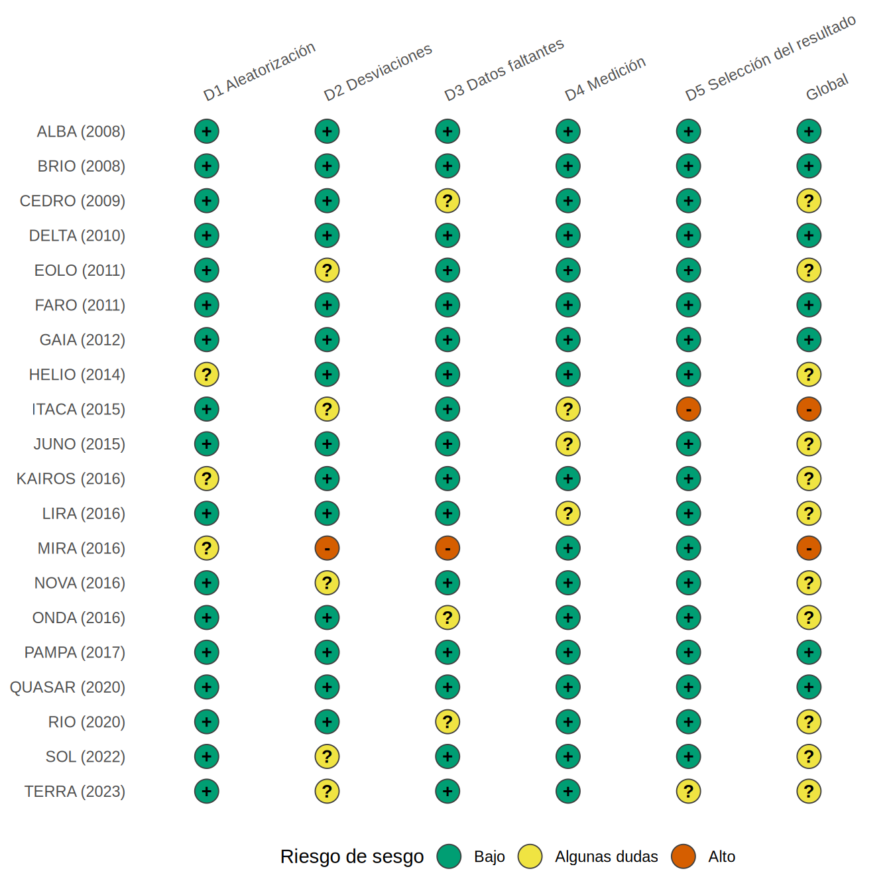
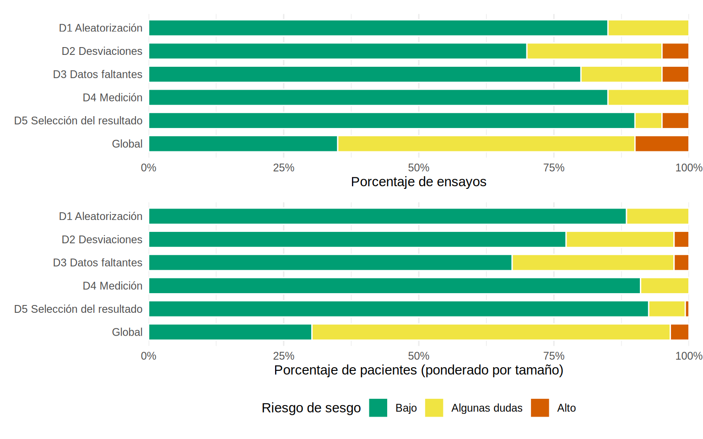

library(tidyverse)
library(metafor)
library(patchwork)
source("R/funciones_extra_a.R") # num(), pct()
source("R/funciones_cap21.R") # grafico_semaforo(), grafico_barras_rob()
theme_set(theme_minimal(base_size = 12))
# 20 ensayos FICTICIOS de un iSGLT2 frente a placebo en ERC (datos ficticios; construidos en R/simular_metaanalisis.R)
ensayos <- read_csv("Bases/metaanalisis_isglt2.csv", show_col_types = FALSE) |>
mutate(across(starts_with("rob_"), \(x) factor(x, levels = c("Bajo", "Algunas dudas", "Alto"))))Extracción de datos y riesgo de sesgo
Nota🩺 Escenario
Ya tienes los veinte ensayos de iSGLT2 que pasaron la selección (ficticios, 21.1-21.2). Ahora hay que sacar de cada PDF los números que alimentarán el metaanálisis (eventos, tamaños, albuminuria media…) y juzgar cuánto confiar en cada ensayo. Un compañero propone extraer los datos «a ojo» en una hoja de cálculo. Tú sabes que un 1 325 tecleado como 1 352, o un brazo intercambiado, cambia el resultado final y nadie lo vería. Y que un ensayo pequeño, abierto y con muchas pérdidas no pesa lo mismo que uno grande y bien hecho.
Lo que vamos a hacer
- Diseñar el formulario de extracción y detectar errores de extracción comparando dos extractores y recalculando lo que se puede recalcular.
- Entender los dominios de RoB 2 (ensayos) y ROBINS-I (estudios no aleatorizados) en lenguaje clínico.
- Dibujar los gráficos de semáforo y de barras apiladas con
ggplot2y ver si el riesgo de sesgo se relaciona con el resultado.
Paso 1: el formulario de extracción
El formulario es la plantilla donde se anota lo mismo de cada estudio. Se prueba antes en 2-3 estudios (piloto) y se congela. Para este caso incluiría:
- Identificación: estudio, año, informes asociados.
- Población: TFGe media, albuminuria (UACR) media y su unidad, % de diabetes, criterios de entrada.
- Intervención y comparador: fármaco, dosis, tratamiento de fondo (¿todos con IECA/ARA-II?).
- Desenlace: definición exacta del evento renal compuesto, tiempo de seguimiento, número de eventos y de pacientes por brazo, según el análisis por intención de tratar, y/o la estimación (HR, RR) con su IC.
- Riesgo de sesgo: el juicio de cada dominio con la frase del artículo que lo justifica.
Dos reglas de oro. Extrae dos personas por separado y reconcilia después, igual que en el cribado (21.2). Y anota lo que dice el artículo, no lo que crees que quiso decir: si algo no está, se anota como «no reportado» y se pide al autor. En R, tu formulario es una tabla con una fila por estudio; las primeras columnas de la nuestra:
ensayos |> select(estudio, n_trat, n_ctrl, ev_trat, ev_ctrl, seguimiento_meses, uacr_media, tfg_media, pct_dm) |> head(5)# A tibble: 5 × 9
estudio n_trat n_ctrl ev_trat ev_ctrl seguimiento_meses uacr_media tfg_media
<chr> <dbl> <dbl> <dbl> <dbl> <dbl> <dbl> <dbl>
1 ALBA (20… 430 406 41 52 28 718 63.9
2 BRIO (20… 421 412 28 34 33 246 29.2
3 CEDRO (2… 1941 1998 183 253 27 305 51.9
4 DELTA (2… 1125 1213 121 152 32 238 37.4
5 EOLO (20… 1322 1326 32 122 46 938 40.7
# ℹ 1 more variable: pct_dm <dbl>A veces el artículo solo da el HR (o RR) con su IC 95 % y no los eventos. Para metaanalizar hace falta el logaritmo del cociente y su error estándar, que se recupera de los límites del IC:
\[ \text{EE}(\ln HR) = \frac{\ln(\text{LS}) - \ln(\text{LI})}{2 \times 1.96} \]
hr <- 0.72; li <- 0.62; ls <- 0.84 # ejemplo hipotético de un artículo
ee <- (log(ls) - log(li)) / (2 * qnorm(0.975))
c(log_hr = log(hr), ee = ee) log_hr ee
-0.32850407 0.07747143 Con esos dos números (-0.329 y 0.077) ya puedes entrar al metaanálisis (21.4). Observa que se trabaja en escala logarítmica, donde las razones son simétricas y aproximadamente normales.
Paso 2: cazar errores de extracción
Los errores de extracción son frecuentes y casi siempre silenciosos. Hay dos defensas. La primera es la doble extracción: comparar celda por celda lo que anotó cada persona. Simulamos un segundo extractor que se equivoca en dos estudios (un par de eventos intercambiados y una cifra transpuesta):
cols_num <- c("n_trat", "n_ctrl", "ev_trat", "ev_ctrl")
ext_b <- ensayos |> select(estudio, all_of(cols_num), log_rr) # el extractor B copia el log RR del artículo
i_cedro <- which(ext_b$estudio == "CEDRO (2009)"); i_faro <- which(ext_b$estudio == "FARO (2011)")
ext_b[i_cedro, c("ev_trat", "ev_ctrl")] <- ext_b[i_cedro, c("ev_ctrl", "ev_trat")] # error 1: brazos intercambiados
ext_b$n_trat[i_faro] <- 381 # error 2: 831 tecleado como 381
# comparación celda a celda: ¿dónde difieren A y B?
comparar <- function(a, b) {
full_join(pivot_longer(a, -estudio, names_to = "campo", values_to = "A"),
pivot_longer(b, -estudio, names_to = "campo", values_to = "B"), by = c("estudio", "campo")) |>
filter(A != B)
}
comparar(ensayos |> select(estudio, all_of(cols_num), log_rr), ext_b)# A tibble: 3 × 4
estudio campo A B
<chr> <chr> <dbl> <dbl>
1 CEDRO (2009) ev_trat 183 253
2 CEDRO (2009) ev_ctrl 253 183
3 FARO (2011) n_trat 831 381La comparación señala 3 celdas distintas, que se resuelven volviendo al artículo. La segunda defensa es recalcular lo que se pueda: el log RR y su error estándar se pueden reconstruir con los eventos y los tamaños. Si no coinciden con lo que el artículo da, hay un error en alguna parte (o el artículo lo calculó de otra forma, y eso también hay que saberlo):
recalcular <- function(d) {
d |> mutate(log_rr_calc = log(((ev_trat + 0.5) / (n_trat + 0.5)) / ((ev_ctrl + 0.5) / (n_ctrl + 0.5))), # con 0.5 en cada celda
diferencia = log_rr - log_rr_calc)
}
ensayos |> recalcular() |> summarise(max_diferencia_A = max(abs(diferencia)))# A tibble: 1 × 1
max_diferencia_A
<dbl>
1 1.11e-16incoherentes <- ext_b |> recalcular() |> filter(abs(diferencia) > 0.01)
incoherentes |> select(estudio, log_rr, log_rr_calc, diferencia)# A tibble: 2 × 4
estudio log_rr log_rr_calc diferencia
<chr> <dbl> <dbl> <dbl>
1 CEDRO (2009) -0.294 0.352 -0.646
2 FARO (2011) -0.173 0.606 -0.779Qué vemos. La extracción A es coherente (diferencia máxima 1.1e-16). En la B, el recálculo marca 2 estudios (CEDRO (2009) y FARO (2011)): justo los dos con error. Un brazo intercambiado invierte el signo del efecto de ese ensayo y puede distorsionar el resultado, sobre todo si el ensayo es grande. Las dos defensas se complementan: la doble extracción atrapa errores de transcripción y el recálculo atrapa incoherencias internas.
Paso 3: RoB 2 en lenguaje clínico
RoB 2 (Risk of Bias 2, Cochrane) evalúa el riesgo de sesgo de un resultado de un ensayo aleatorizado con cinco dominios. Cada uno se juzga con preguntas guía como Bajo riesgo, Algunas dudas o Alto riesgo:
- Aleatorización: ¿la secuencia fue realmente aleatoria y la asignación quedó oculta hasta incluir al paciente? Si el residente sabe a qué brazo va el siguiente, puede elegir quién entra. Pista: diferencias basales mayores de lo esperado por azar.
- Desviaciones de lo planeado: ¿se enmascararon pacientes y clínicos?, ¿hubo cointervenciones distintas (más IECA en un brazo)?, ¿se analizó por intención de tratar? Aquí importa si el efecto de interés es el de asignarse al tratamiento o el de tomarlo.
- Datos faltantes: ¿cuántos pacientes se perdieron y fueron iguales en los dos brazos? Si los que empeoran se pierden más en un brazo, el resultado está sesgado.
- Medición del desenlace: ¿se midió igual en ambos grupos y quien lo evaluó desconocía el brazo? Ejemplo: «iniciar diálisis» tiene un componente de decisión del clínico, mucho más manipulable en un ensayo abierto que una creatinina de laboratorio central.
- Selección del resultado reportado: ¿el desenlace y su análisis estaban definidos antes (en el protocolo o el registro) o se eligió, entre varias definiciones del compuesto renal, la de mejor p?
El juicio global de RoB 2 sale de los cinco dominios con un algoritmo (en general, un dominio de alto riesgo hace el ensayo de alto riesgo; varias «algunas dudas» también pueden hacerlo). En nuestros datos ficticios usamos la regla simple de «el peor dominio».
Para estudios no aleatorizados (cohortes, casos y controles) se usa ROBINS-I (Risk Of Bias In Non-randomised Studies of Interventions), que compara el estudio con un ensayo hipotético ideal (la misma idea del target trial del libro) en siete dominios: confusión (el más importante: ¿se ajustó por todos los confusores, como los del DAG de los capítulos de ajuste?), selección de participantes, clasificación de las intervenciones, desviaciones de lo planeado, datos faltantes, medición de los desenlaces y selección del resultado reportado. Sus niveles son Bajo, Moderado, Serio, Crítico y Sin información. En un estudio observacional, el riesgo de confusión rara vez es «bajo».
Paso 4: semáforo y barras con ggplot2
El gráfico de semáforo muestra el juicio de cada dominio en cada estudio (estudio × dominio); el de barras apiladas resume el panorama (cuántos estudios o pacientes tienen cada nivel por dominio). Cada gráfico lleva color y símbolo (+, ?, −) para que se lea también en blanco y negro.
grafico_semaforo(ensayos)
(grafico_barras_rob(ensayos) + theme(legend.position = "none")) /
grafico_barras_rob(ensayos, ponderar = TRUE)
tab_rob <- ensayos |> count(rob_global) |> mutate(porcentaje = round(100 * n / sum(n)))
tab_rob# A tibble: 3 × 3
rob_global n porcentaje
<fct> <int> <dbl>
1 Bajo 7 35
2 Algunas dudas 11 55
3 Alto 2 10# ¿Y si contamos pacientes en lugar de ensayos?
pac <- ensayos |> mutate(p = n_trat + n_ctrl)
pac_alto <- sum(pac$p[pac$rob_global == "Alto"]) / sum(pac$p) # % de pacientes en ensayos de alto riesgo global
pac_faltantes <- sum(pac$p[pac$rob_datos_faltantes != "Bajo"]) / sum(pac$p) # % de pacientes en ensayos con reparos en datos faltantes
mediana_n <- pac |> group_by(rob_global) |> summarise(mediana = median(p))Qué vemos.
- Solo 7 de los 20 ensayos (35 %) tienen bajo riesgo en todos los dominios; 2 tienen alto riesgo global (ITACA (2015) y MIRA (2016)) y el resto, «algunas dudas». El peor dominio es desviaciones de lo planeado (6 ensayos sin bajo riesgo).
- Al ponderar por pacientes el panorama cambia según el dominio. El alto riesgo casi desaparece: los dos ensayos de alto riesgo global suman solo el 3 % de los pacientes, porque son pequeños (mediana de 572 pacientes frente a 1 293 en los de bajo riesgo). Pero datos faltantes empeora: el 33 % de los pacientes está en ensayos con reparos en ese dominio (frente al 20 % de los ensayos), porque dos de los ensayos más grandes tienen dudas ahí.
- El juicio global parece peor que cada dominio por separado porque basta un dominio dudoso para rebajarlo: es la regla del «peor dominio».
Paso 5: ¿importa el riesgo de sesgo para el resultado?
La pregunta práctica es si los ensayos con más sesgo dan resultados distintos. Es un análisis de sensibilidad: se repite el metaanálisis (21.4 explica el método) solo con los ensayos de bajo riesgo y se compara:
ensayos <- ensayos |> mutate(grupo_rob = if_else(rob_global == "Bajo", "Bajo riesgo", "Algunas dudas o alto riesgo"))
res_rob <- ensayos |>
group_by(grupo_rob) |>
group_modify(\(d, g) {
m <- rma(log_rr, sei = se_log_rr, data = d, method = "REML")
tibble(ensayos = m$k, RR = exp(coef(m)), li = exp(m$ci.lb), ls = exp(m$ci.ub), tau2 = m$tau2)
})
mod_rob <- rma(log_rr, sei = se_log_rr, mods = ~ rob_global == "Bajo", data = ensayos, method = "REML") # diferencia entre grupos
res_rob |> mutate(across(where(is.numeric), \(x) round(x, 2)))# A tibble: 2 × 6
# Groups: grupo_rob [2]
grupo_rob ensayos RR li ls tau2
<chr> <dbl> <dbl> <dbl> <dbl> <dbl>
1 Algunas dudas o alto riesgo 13 0.61 0.48 0.77 0.15
2 Bajo riesgo 7 0.73 0.63 0.85 0.01Qué vemos. El RR agrupado es 0.73 en los 7 ensayos de bajo riesgo y 0.61 en los 13 restantes: los ensayos con algún reparo muestran un efecto algo más favorable, pero la diferencia no es concluyente (p = 0.45) con tan pocos ensayos. Sin embargo, la conclusión en ambos casos es la misma (el iSGLT2 reduce el evento renal), lo que refuerza el resultado principal. Si los dos análisis discreparan, habría que decir en el informe que la conclusión depende de los ensayos con más riesgo de sesgo.
Tip💡 Con el paquete {robvis} (código no verificado en el entorno de pruebas del libro)
robvis dibuja estos mismos gráficos a partir de una tabla con las columnas Study, D1…D5 y Overall (y Weight si quieres ponderar). El nuestro es una versión propia ejecutable, que además marca los niveles con símbolos:
library(robvis)
trad <- c("Bajo" = "Low", "Algunas dudas" = "Some concerns", "Alto" = "High")
datos_rob <- ensayos |>
transmute(Study = estudio, D1 = trad[as.character(rob_aleatorizacion)], D2 = trad[as.character(rob_desviaciones)],
D3 = trad[as.character(rob_datos_faltantes)], D4 = trad[as.character(rob_medicion)],
D5 = trad[as.character(rob_seleccion)], Overall = trad[as.character(rob_global)], Weight = n_trat + n_ctrl) |>
as.data.frame()
rob_traffic_light(datos_rob, tool = "ROB2")
rob_summary(datos_rob, tool = "ROB2")Trampas frecuentes
Advertencia⚠️ Errores clásicos de la extracción y la evaluación del sesgo
- Extraer solo una persona y sin comprobar: una cifra transpuesta o un brazo cambiado pasa inadvertido.
- Mezclar unidades (UACR en mg/g y en mg/mmol, creatinina en mg/dL y µmol/L) o tomar el análisis equivocado (por protocolo en lugar de intención de tratar).
- Resumir el riesgo de sesgo con una «puntuación» o con el nombre de una escala: RoB 2 se juzga por resultado y por dominio, con la justificación escrita, no con una suma.
- Excluir los ensayos de alto riesgo sin más: es un análisis de sensibilidad, no un criterio de elegibilidad nuevo (que debería estar en el protocolo).
- Olvidar que los ensayos pequeños suelen tener más sesgo y, a la vez, más resultados llamativos: riesgo de sesgo y sesgo de publicación se mezclan (21.6).
Importante🎯 En resumen
- El formulario de extracción se prueba en piloto y se aplica por dos personas; se recalcula lo que se pueda (el log RR y su EE) para cazar errores. El EE del log HR sale del IC: (ln LS − ln LI) / (2 × 1.96).
- RoB 2 tiene cinco dominios (aleatorización, desviaciones, datos faltantes, medición, selección del resultado); ROBINS-I tiene siete y se centra en la confusión.
- Los gráficos de semáforo y de barras apiladas resumen el riesgo de sesgo: en nuestros datos ficticios solo 7 de 20 ensayos tienen bajo riesgo global.
- El análisis de sensibilidad por riesgo de sesgo da RR 0.73 (bajo riesgo) frente a 0.61 (resto): conclusión similar.
Ejercicio
- Añade un tercer error al extractor B (por ejemplo,
ev_tratde ONDA multiplicado por 10) y comprueba quecomparar()yrecalcular()lo detectan. - Con
grafico_barras_rob(ensayos, ponderar = TRUE), ¿qué dominio se ve peor cuando se pondera por pacientes? ¿Por qué podría cambiar respecto al gráfico sin ponderar? - Un ensayo abierto (sin enmascaramiento) tiene como desenlace «inicio de diálisis». ¿Qué dominio de RoB 2 te preocupa más y por qué?
Referencias
- Sterne JAC y cols. RoB 2: a revised tool for assessing risk of bias in randomised trials. BMJ. 2019;366:l4898.
- Sterne JAC y cols. ROBINS-I: a tool for assessing risk of bias in non-randomised studies of interventions. BMJ. 2016;355:i4919.
- Higgins JPT y cols. (eds.). Cochrane Handbook for Systematic Reviews of Interventions, capítulos de recolección de datos y de riesgo de sesgo.